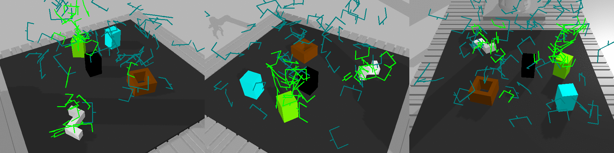
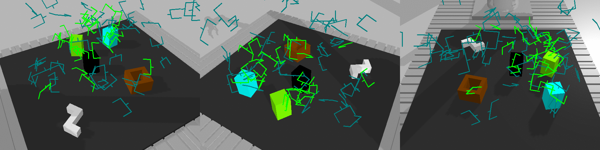

|
Xi Huang
Hi, there! I am a final-year PhD student specializing in enabling robots to operate in human-centered, dynamic, and unstructured environments, advised by
Torsten Kroeger and
Tamim Asfour.
During my PhD, I developed efficient machine learning algorithms for robot manipulation, motion planning and control
informed by sensor feedback, computer vision and 3D scene understanding.
Due to my part-time activities at b>>robotized with
Denis Stogl, I am also an active contributor to open-source projects, including
ros2_control and ros2_canopen.
Robotic algorithms should work in the real world, not only in the simulations!
Email /
Google Scholar /
Github /
LinkedIn /
CV
|
|
MoRe-ERL: Learning Motion Residuals using Episodic Reinforcement Learning
Xi Huang, Hongyi Zhou, Ge Li, Yucheng Tang, Björn Hein, and Rudolf Liotikov
Under Review
Video
We propose MoRe-ERL, a general framework that combine episodic reinforcement learning (ERL) and residual learning, which refines preplanned reference trajectories into safe, feasible, and efficient task-specific trajectories.
It can be seamlessly plug in to arbitrary ERL methods and motion generators.
MoRe-ERL identifies trajectory segments requiring modification while preserving critical task-related maneuvers and then generates smooth residual adjustments using B-Spline-based movement primitives to ensure adaptability to dynamic task contexts and smoothness in trajectory refinement.
Experimental results demonstrate that residual learning significantly outperforms training from scratch using ERL methods, achieving superior sample efficiency and task performance. Hardware evaluations further validate the framework, showing that policies trained in simulation can be directly deployed in real-world systems, exhibiting a minimal sim-to-real gap.
|
X-IL: Exploring the Design Space of Imitation Learning Policies
Xiaogang Jia, Xi Huang, Atalay Donat, Xuan Zhao, Denis Blessing, Hongyi Zhou,
Han A. Wang, Qian Wang, Rudolf Lioutikov, Gerhard Neumann
Under Review
preprint
In this work, we present X-IL, an accessible open-source framework designed to systematically explore this design space. The framework's modular design enables seamless swapping of policy components, such as backbones (e.g., Transformer, Mamba, xLSTM) and policy optimization techniques (e.g., Score-matching, Flow-matching). This flexibility facilitates comprehensive experimentation and has led to the discovery of novel policy configurations that outperform existing methods on recent robot learning benchmarks. Our experiments demonstrate not only significant performance gains but also provide valuable insights into the strengths and weaknesses of various design choices. This study serves as both a practical reference for practitioners and a foundation for guiding future research in imitation learning.
|
Towards Fusing Point Cloud and Visual Representations for Imitation Learning
Atalay Donat, Xiaogang Jia, Xi Huang, Aleksandar Taranovic, Denis Blessing, Ge Li,
Hongyi Zhou, Hanyi Zhang, Rudolf Lioutikov, Gerhard Neumann
Under Review
preprint
In this work, we propose FPV-Net, a novel imitation learning method that effectively combines the strengths of both point cloud and RGB modalities. Our method conditions the point-cloud encoder on global and local image tokens using adaptive layer norm conditioning, leveraging the beneficial properties of both modalities. Through extensive experiments on the challenging RoboCasa benchmark, we demonstrate the limitations of relying on either modality alone and show that our method achieves state-of-the-art performance across all tasks.
|


dGrasp: NeRF-Informed implicit grasp policies with supervised optimization slopes
Gergely Sóti, Xi Huang and Björn Hein
Robotics and Autonomous Systems
preprint
We present dGrasp, an implicit grasp policy with an enhanced optimization landscape.
This landscape is defined by a NeRF-informed grasp value function.
The neural network representing this function is trained on simulated grasp demonstrations.
During training, we use an auxiliary loss to guide not only the weight updates of this network but also the slope of the optimization landscape.
This loss is computed on the demonstrated grasp trajectory and the gradients of the landscape.
It requires second order optimization during training to incorporate valuable information from the trajectory and leads to facilitating the optimization process of the implicit policy.
Experiments demonstrate that employing this auxiliary loss improves performance in simulation as well as their zero-shot transfer to the real-world.
|
Planning with Learned Subgoals Selected by Temporal Information
Xi Huang,
Gergely Sóti, Christoph Ledermann, Björn Hein and Torsten Kröger
ICRA 2024
preprint
Path planning in a changing environment is a challenging task in robotics, as moving objects impose time-dependent constraints.
Recent planning methods primarily focus on the spatial aspects, lacking the capability to directly incorporate time constraints.
In this paper, we propose a method that leverages a generative model to decompose a complex planning problem into small manageable ones by incrementally generating subgoals given the current planning context.
Then, we take into account the temporal information and use learned time estimators based on different statistic distributions to examine and select the generated subgoal candidates.
Experiments show that planning from the current robot state to the selected subgoal can satisfy the given time-dependent constraints while being goal-oriented.
|
6-DoF Grasp Pose Evaluation and Optimization via Transfer Learning from NeRFs
Gergely Sóti, Xi Huang and Björn Hein
ICRA 2024
Website
/
preprint
We address the problem of robotic grasping of known and unknown objects using implicit behavior cloning. We train a grasp evaluation model from a small number of demonstrations that outputs higher values for grasp candidates that are more likely to succeed in grasping. This evaluation model serves as an objective function, that we maximize to identify successful grasps. Key to our approach is the utilization of learned implicit representations of visual and geometric features derived from a pre-trained NeRF. Though trained exclusively in a simulated environment with simplified objects and 4-DoF top-down grasps, our evaluation model and optimization procedure demonstrate generalization to 6-DoF grasps and novel objects both in simulation and in real-world settings, without the need for additional data.
|
Train What You Know -- Precise Pick-and-Place with Transporter Networks
Gergely Sóti, Xi Huang and Björn Hein
ICRA 2023
Website
/
preprint
Precise pick-and-place is essential in robotic applications. To this end, we define a novel exact training method and an iterative inference method that improve pick-and-place precision with Transporter Networks. We conduct a large scale experiment on 8 simulated tasks. A systematic analysis shows, that the proposed modifications have a significant positive effect on model performance. Considering picking and placing independently, our methods achieve up to 60% lower rotation and translation errors than baselines. For the whole pick-and-place process we observe 50% lower rotation errors for most tasks with slight improvements in terms of translation errors. Furthermore, we propose architectural changes that retain model performance and reduce computational costs and time. We validate our methods with an interactive teaching procedure on real hardware.
|
HIRO: Heuristics Informed Robot Online path planning using pre-computed deterministic roadmaps
Xi Huang,
Gergely Sóti, Christoph Ledermann, Björn Hein and Torsten Kröger
IROS 2022
Video
/
preprint
With the goal of efficiently computing collision-free robot motion trajectories in dynamically changing environments, this work present results of a novel method for Heuristics Informed Robot Online Path Planning (HIRO).
Dividing robot environments into static and dynamic elements, we use the static part for initializing a deterministic roadmap, which provides a lower bound of the final path cost as informed heuristics for fast path-finding.
These heuristics guide a search tree to explore the roadmap during runtime. The search tree examines the edges using a fuzzy collision checking concerning the dynamic environment.
Finally, the heuristics tree exploits knowledge fed back from the fuzzy collision checking module and updates the lower bound for the path cost.
As we demonstrate in real-world experiments, the closed-loop formed by these three components significantly accelerates the planning procedure.
Experiments in simulation and the real world show that HIRO can find collision-free paths considerably faster than baseline methods with and without prior knowledge of the environment.
|
ETA-IK: Execution-Time-Aware Inverse Kinematics for Dual-Arm Systems
Xi Huang,
Yucheng Tang, Tao Chen, Ilshat Mamaev, and Björn Hein
Under Review
preprint
ETA-IK is a novel Execution-Time-Aware Inverse Kinematics method tailored for dual-arm robotic systems.
The primary goal is to optimize motion execution time by leveraging the redundancy of both arms, specifically in tasks where only the relative pose of the robots is constrained, such as dual-arm scanning of unknown objects.
Unlike traditional inverse kinematics methods that use surrogate metrics such as joint configuration distance, our method directly incorporates motion execution time and implicit collisions into the optimization process, thereby finding target joints that allow subsequent trajectory generation to get more efficient and collision-free motion.
A neural network based execution time approximator is employed to predict time-efficient joint configurations while accounting for potential collisions.
We demonstrate significant reductions in execution timem, showing improved motion efficiency without sacrificing positioning accuracy.
These results highlight the potential of ETA-IK to improve the performance of dual-arm systems in applications, where efficiency and safety are paramount.
|
|
{kind=link}